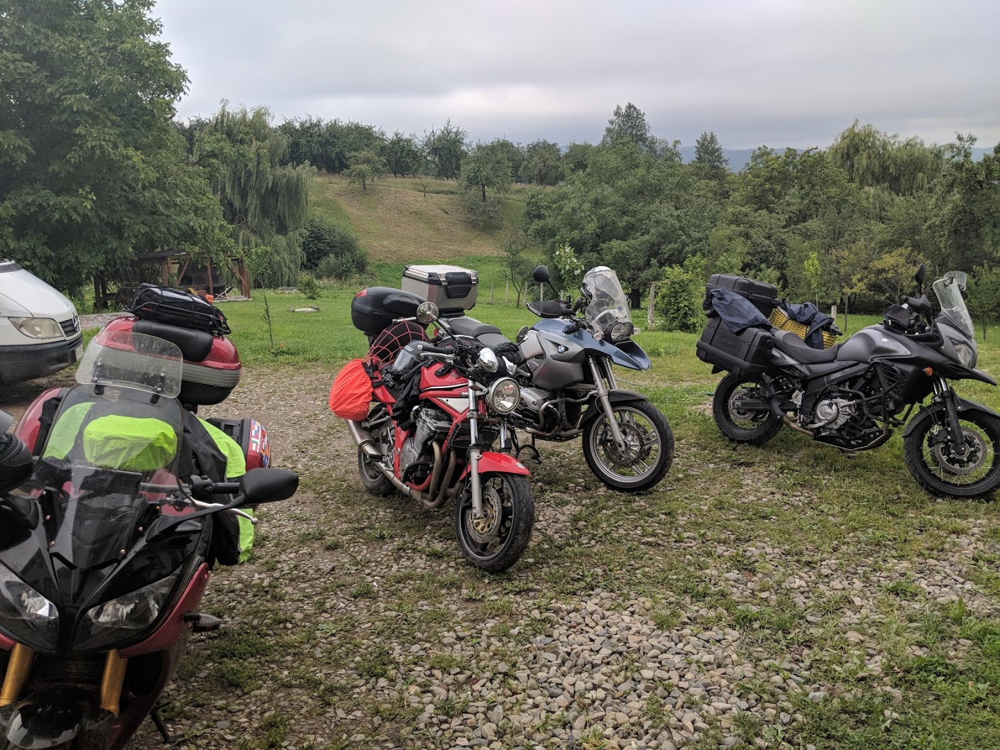
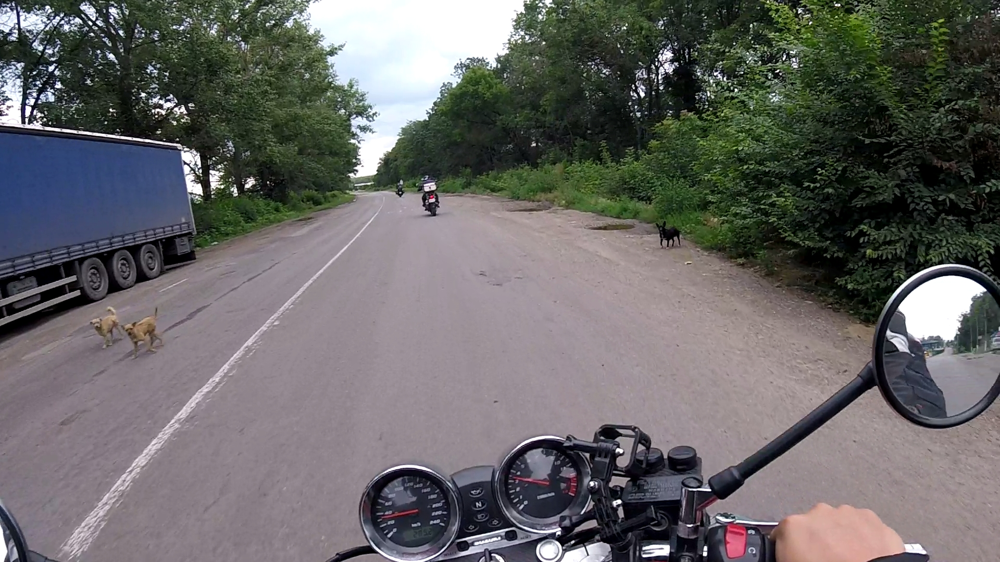
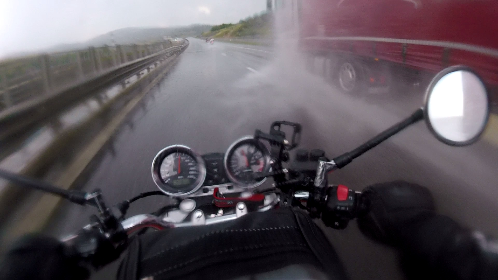
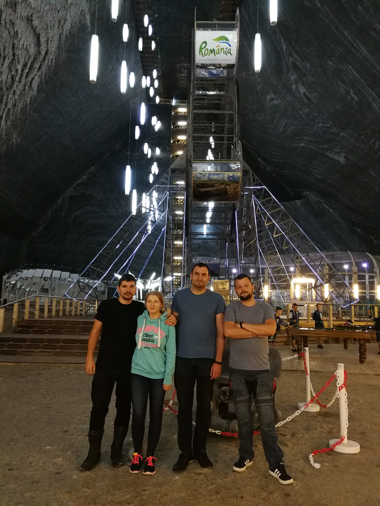
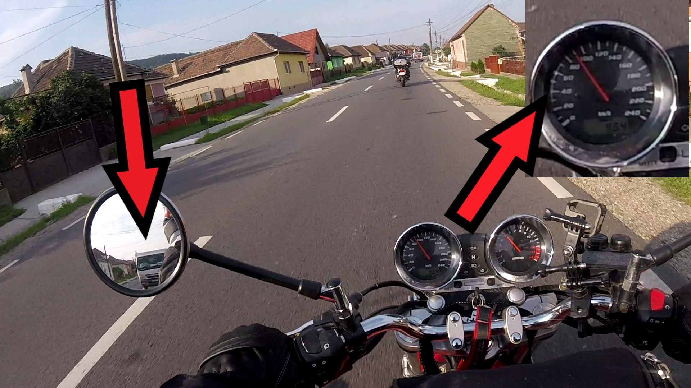

Tak ako to už býva zvykom tie najlepšie nápady vznikajú pri pive s partiou. O tomto mototripe sme debatovali mesiace. Až sme dospeli k záveru, že precestujeme 6 krajín. Teda ono ich v podstate 6 nie je, keďže Podnestersko je iba "vymyslené".
Náš itinerár bol navrhnutý nasledovne:Všetko sme to chceli stihnúť za dva týždne, čo sa nám aj podarilo. Samozrejme plány sme museli prispôsobovať okolnostiam a občas niečo pozmeniť prípadne vynechať. Ale to sa už dozviete v ďalších častiach.
Našu zostavu tvorili tri motorky Yamaha FZ1 (Dávid + Katka), BMW GS 1200 (Marek) a ja na Suzuki Bandit GSF 600. Okrem toho ostatok osadenstva išiel autom (Dodo, Jano, Lucia, Andrej, Naty). V Rumunsku sa k nám mal pripojiť Ľuboš so Zuzkou na Honde CBF 1000. Ale v Deve sa im motorka pokazila a boli donútení vrátiť sa späť na Slovensko. Posledný deň na Sunny beach sa k nám pridali Laco s Aďou na Suzuki V-strom, ktorí absolvovali s nami cestu po Ukrajine, Moldavsku, Podnestersku.
Vyrážali sme v piatok 6.7.2018 ráno o piatej z Nových Zámkov smer Maďarsko. V Komárne akurát prebiehala rekonštrukcia sklápacieho mosta. Takže sme museli ísť menšou obchádzkou po meste. Ešte šťastie, že sme vyrazili tak skoro ináč by sme skončili zrejme v riadnej zápche. Prvú zastávku sme absolvovali hneď za hranicami na benzínke v Komárome. Natankovali sme plnú, naplnili bandasky, kúpili sme diaľničné známky a hodinu sme nastavovali intercomy, no aj tak neúspešne. Prefrčali sme Maďarskom s dvoma zastávkami na benzínkach. Na prvej sme niečo zbaštili a na ďalšej sme tankovali. Od Budapešti sme sa vybrali smerom na Szolnok. Na hraničnom priechode Ártánd-Bors pri meste Oradea sme strávili asi 2 minúty. Pozreli nám občianske, upozornili ma aby som si vypol kameru a pokračovali sme smer Turda.

V Rumunsku dopravné predpisy nemajú veľkú váhu. Všetci jazdia minimálne o 30km/h rýchlejšie ako je predpísané. To nám samozrejme vyhovovalo, cez dediny a mestá 80-90km/h a mimo 140. Na stav ciest sme si ponadávali, no to sme ešte netušili čo nás čaká na konci tripu. Teraz spätne môžem povedať, že cesty v Rumunsku boli celkom dobré, občas sme natrafili na kratšie panelové úseky, sem-tam sa objavila na ceste aj jama. Ďalšie dôležité zistenie o Rumunsku je, že tu žije asi rovnaký počet psov ako ľudí. Čím menšia dedina, tým viac psov na ulici. Niektorí iba ležali, občas otvorili jedno oko aby skontrolovali situáciu. Ďalší po nás len nechápavo pozerali. Iní zase mali potrebu nás naháňať a dostať sa pod kolesá, pre naše a aj ich šťastie sa to zaobišlo bez incidentov.
Chceli sme sa cestou zastaviť na nejaký obed, no reštauráciu sme nestretli. Videli sme niekoľko pouličných fastfood kebabov, občas obchodíky s rôznym tovarom. Zaujímavé je, že sa všetky volali ABC. Vlastne všetky služby mali v názve ABC, stále nevieme, že prečo (ABC shop, ABC kebab, ABC magazín, ABC servis...) Keďže reštaurácie sme nenachádzali, zastavili sme sa pri krčme, mysleli sme si, že tam budú robiť aj nejaké jedlo. Mýlili sme sa. Vedľa bol ABC shop. Tak reku zbehnem dnu a kúpim si niečo. Mal som na výber asi 5 fliaš Fanty, chrumky, nanuky, plienky, toaleťák, šampón a tampóny. Tak som radšej vyjedol Dávidovi toasty, ktoré mal ešte z domu. Pokračovali sme ďalej. Už sme boli iba 30 minút od cieľa keď nás na diaľnici chytil lejak.
Poriadne zmoknutí sme dorazili do Turdy, kde sme mali zajednané ubytko. Zhodili sme veci a išli sme do soľnej bane Salina Turda. Ide o bývalú soľnú baňu, ktorá teraz slúži ako múzeum. Ale to nie je všetko oni tam totižto vnútri postavili KOLOTOČ! Normálne sa tam nachádza zábavný park aj s vyhliadkovým kolesom, akurát ten výhľad je iba na steny bane. Okrem toho si tam môžete zahrať pingpong, minigolf, bowling, biliard. V ďalšej časti si dokonca viete požičať loďku a zaveslovať si po bani. Keď budete mať cestu okolo, určite sa zastavte, oplatí sa to. Vstupné na osobu je 30 lei. Problém môže byť s parkovaním. My sme motorky dali na jedno parkovacie miesto a odišli skôr ako prišiel parkovací Miško škemrať drobné za parking.
Cestou z bane sme sa ešte zastavili v obchode, kúpili sme niečo na raňajky a zopár pív na večer. Na ubytovaní sme čakali posádku na aute. Kvôli Dodovím pracovným povinnostiam vyrážali o 11:00, čo samozrejme bolo reálne neskôr. Okrem toho zabudli párkrát odbočiť tak nakoniec dorazili 22:30 rumunského času (prechodom do Rumunska sa čas posúva o 1h dopredu). Nastavili sme konečne intercomy tak aby sme sa všetci počuli, privítali sme posádku auta, vypili pivá a TATRATEA. Odchod sme si stanovili na 6 ráno a spokojne si ľahli spať. Chvíľu som si zvykal na to, že sa celý dom trasie keď okolo prejde kamión, samozrejme 90km/h po meste. Ale s pocitom, že zajtra nás čaká Transfagarasan, som zaspal ako bábätko s úsmevom na tvári.
Na druhý deň sme vyrazili všetci spolu, tak ako bolo naplánované, o 6 ráno. Zastavili sme sa na benzínke, vypili kávu a dotankovali. Smerom na Transfagarasan sme popredbiehali pár áut a kamiónov, čo autom nebolo jednoduché a tak sme posádku auta zanechali. Cestou sme stretli dve zmrzlinárske autá. Pravdepodobne prevážali zmrzlinu ale nemali chladiace boxy, čo nám teda dali pocítiť. Predbiehali cez plné čiary, cez odbočovacie pruhy, lepili sa mi na zadné koleso v dedine, keď som mal na tachometri 100km/h. No ale chápem, zmrzlina by v tom teple nevydržala dlho.
Dorazili sme na Transfagarasan. Ešte vysvetlím, čo to vlastne je. Transfagarasan je označenie štátnej cesty (7C) v Rumunsku. Ide o jednu z najvyššie položených ciest v Rumunsku. Na trase sa nachádza najdlhší tunel v Rumunsku, ktorý je neosvetlený. Názov je odvodený od pohoria Fagaras. Pri výstavbe cesty zahynulo 40 ľudí. Ak sa sem chystáte treba si overiť či je cesta sprístupnená, väčšinu času je kvôli snehu a zosuvom neprejazdná, otvorená je zvyčajne od júla do októbra.
Postáli sme pri prvých trhoch so suvenírmi, že počkáme na ostatných. No oni tam už čakali na nás! Dodo totiž opäť zabudol odbočiť, ale tentokrát sa mu to vyplatilo lebo to bola skratka. Kúpili sme nejaké suveníry, Andrej polietal s dronom a mohli sme pokračovať. Všetci už sedeli v aute ale nikto z nich si nevšimol, že majú otvorený kufor plný batožiny. Dodo spokojne cúval aj keď v cúvacej kamere videl nebíčko. Jeho odpoveď na túto situáciu bola "Myslel som si, že stojím tak do kopca, že vidím oblaky". Pobavili sme sa :D .
Prejazd Transfagarasanom som si užíval. Krásne výhľady, ostré zákruty, strmé stúpanie, občas nejaká kôpka snehu, medzi to všetko menšie aj väčšie vodopády, ktoré boli následkom roztápajúceho sa snehu. Zastavili sme na mieste s dobrým výhľadom aby sme sa pokochali a porobili fotky. Andrej vytiahol drona a dostal nápad, že nás bude dron sledovať a nahrávať. Tak sme to skúsili. Hneď v prvej zákrute nás dron stratil. V prípade, že nás stratí mal sa vrátiť na miesto kde štartoval. Čo nebolo zrovna múdre. V aute Andrej zahájil paniku:
Andrej: "Dodo, otoč to!"
Dodo: "Andrej, tu sa nemôžem otáčať!"
Andrej: "Apko, ale dron!!!"
"Apko, ale dron!" legendárna veta :D Myslím si, že boli jediní, ktorí sa kedy na Transfagarasane otáčali. fotky TransfagarasanVyštverali sme sa na vrchol cesty. Dali sme si dlho očakávaný transfagarassky kürtőskalács, po slovensky trdelník. Hore sme stretli motorkárov z mnohých krajín okrem iného Slovákov, Ukrajincov, Nórov, Angličanov. Pokračovali sme ďalej, cez najdlhší tunel až na priehradu Bajarul Vidraru. Cesta bola kľukatá, plná zákrut. Ako stvorené pre motorku. Užívali sme si to. Marek zahlásil do intercomu "videli ste to? Tam hore bol malý medveď". Robili sme si z neho srandu, že zle videl a iste to bol iba mókuš ako on (mókuš = veverička). O pár metrov ďalej sme narazili na menšiu kolónu. 4 autá v našom smere ďalšie autá v opačnom ale medzi nimi nič. Najprv sme nechápali, čo robia. Až keď sa prvé auto pohlo, tak som to zbadal. Bola tam medvedica, rovno na ceste. Spokojne tam žrala nejaké ovocie z asfaltu. Autá sa zo začiatku tvárili, že nás kryjú pred medvedicou. To, samozrejme, bol omyl. Keď sme sa pohli my, pohli sa aj autá a medzi nami a medvedicou nebolo nič. Našťastie ostala kľudná. Posádka auta bola hneď za nami. Andrej bez rozmyslu vyskočil s mobilom v ruke, a natáčal si medvedicu, ani dvere na aute nezavrel. Myslím, že by bolo bezpečnejšie keby si len stiahne okno a vystrčí ruku. Našťastie sa potom bezpečne vrátil do auta. Keď prechádzali okolo medvedice spoza zvodidiel vykukli ďalšie dva malé medvede. Plní divokým zážitkom sme pokračovali ďalej.
Foto medveďDorazili sme na priehradu Bajarul Vidraru. Na pár minút sme zastavili. Boli tam krásne výhľady, dojem kazilo len preplnené malé parkovisko a nervózni alebo skôr mantaví šoféri. Vypustili sme drona, nafotili, natočili a išli sme ďalej. Zastavili sme dotankovať na prvý pohľad pofidérnej benzínke. Mali tam síce iba jeden stojan, ale mali wc a dalo sa platiť kartou.
Mali sme namierené na hrad Bran. Ide o Draculov hrad, ktorý vlastne Draculov nikdy nebol. Ale ako zmotka pre turistov je to fajn. Dosť dlho nás sprevádzali poriadne mraky a občasný dážď pripadne lejak. Boli sme už len pár kilometrov od hradu keď sme zastavili na kraji cesty a zvažovali či ísť do tej búrky alebo ísť na naše ďalšie ubytovanie do Pitesti. Debata sa naťahovala a mračná sa blížili.
Akurát v tejto chvíli sa nám ozval Ľuboš. Oznámil nám, že mu odišiel regulátor napätia na motorke. Čo v skratke znamená, že motorka je nepojazdná. Náhradný diel by sa dal objednať ale trvalo by to pár dní. Tak sa teda rozhodli, že trip ukončia predčasne. Zavolali bratranca na dodávke, naložili motorku a išli späť do Nových Zámkov. Škoda.
Rozhodli sme sa teda, že do tej búrky nejdeme. Išli sme smer Pitesti, auto pokračovalo na hrad. Urobili sme dobre. Stretla ich riadna prietrž, potoky vody tiekli po ceste. Zmokli by sme na kompletku, v aute to samozrejme nebol až taký problém a navštívili aj hrad. Pokochali sme sa aspoň fotkami. My sme mali celú cestu za chrbtom tie mraky. Zdrhali sme pred nimi tak rýchlo ako sa len dalo. Našťastie sa to podarilo a nezmokli sme. Dorazili sme na ubytovanie v Pitesti. Bol to taký väčší dom s niekoľkými izbami na ubytovanie a s reštauráciou, ktorá ale samozrejme cez víkend nie je otvorená. A keďže bola sobota, museli sme ísť do nákupného centra vzdialeného 4km. Dali sme si dobrý kebab, nakúpili pivá v obchode a išli sme späť na ubytovanie. Ešte dodám, že pri ubytovaní mali na dvore desiatky pávov. Pri pivku sme počkali na ostatných, vypočuli sme si ako bolo na hrade. Podebatovali sme a unavení išli spať.
Foto priehrada + mraky + pávyRáno nás prebudili škriekajúce pávy. Ubytko sme mali aj s raňajkami, tak sme sa zbalili a išli do reštaurácie. Teta nám pripravila chlebíky, salámy, zeleninu a kávu. S plným bruchom sme sa vybrali smer Bulharsko - slnečné pobrežie. Chceli sme sa vyhnúť Bukurešti, tak sme sa rozhodli ísť skratkou.
Do Bulharska sme išli jedným z dvoch mostov, ktoré vedú cez Dunaj na hranici medzi Rumunskom a Bulharskom. Tieto dve krajiny majú spoločnú hranicu dlhú vyše 600km, z toho 450km tvorí Dunaj. Ale cez Dunaj dokázali spoločne postaviť iba dva mosty. My sme prešli mostom medzi Giurgiu a Ruse. Ruse sa v bulharskom jazyku, teda v cyrilike, píše Pyce, asi si viete predstaviť ako sme toto mesto prezývali. Prejazd mostom je pre motocykle zdarma, tak ako aj diaľnice v Rumunsku aj Bulharsku. Pre auto to bolo za 6€, nestačilo mať zakúpenú diaľničnú známku. Prechodom do Bulharska sa zmenilo aj písmo, používajú cyriliku. Našťastie Marek chodil na ruštinu a ja som sa v rámci nudy v práci naučil cyriliku. Som im za to vďačný.
Blížil sa čas obeda, tak sme si povedali, že v najbližšej reštaurácii zastavíme. Prešlo pár desiatok kilometrov a reštaurácia nikde. Tak sme do hľadaných objektov priradili aj fastfoody, kebaby, hocičo. Keď tu zrazu vo Veselinove, malá reštaurácia. Keďže nás bolo 9 rozdelili sme sa na dva stoly. Teta obsluha prišla k prvému stolu, nečakala, že bude musieť použiť iný jazyk ako Bulharský. Ale keď už tam bola tak to nejak poriešila rukami, nohami, obrázkami. Po zistení, že sa tu nachádza mierna jazyková bariéra sa rozhodla, že k nám, k druhému stolu, ani nepríde. Chodila okolo ale ani pohľadom o nás nezavadila, takže sme na ňu ani zamávať nevedeli. Po polhodine prvý stôl už dojedal hlavné jedlo a my sme ešte nemali ani pivo objednané. Na to sme sa tešili, lebo v Bulharsku je tolerancia alkoholu v krvi na úrovni 0,5 promile. Prešlo ešte pár minút a nás prešla trpezlivosť. Naty a Marek to išli vyriešiť dnu. Keď ich teta obsluha zbadala prevrátila očami. Nakoniec sa podarilo podľa obrázkov v menu objednať všetko čo sme chceli. Hodnú chvíľu trvalo kým nám to teta pripravila a doniesla. No radšej ani nemusela... V živote som nevidel kuracie mäso, ktoré je v vnútri ružové a v strede krvavé. Ja som mal bravčové mäso, to sa žuť nedalo. Z tých pár zemiakov čo sme mali ako prílohu sme vyjedli tie, ktoré neboli úplne surové. Aspoň to pivo bolo dobré, aj to sme mali asi šťastie lebo vraj akurát nemali čapované, fľaškové pokaziť nemohli. Zaplatili sme za stratený čas a surové mäso a po hodine a pól hladní pokračovali ďalej.
Rozhodli sme sa neísť cez Burgas ale vziať to skratkou. No tak ako to na Balkáne býva zvykom, cesty II. triedy sú na prd. Čakalo nás pár kilometrov nekvalitných ciest, kde-tu bol vyfrézovaný asfalt bez nejakých náznakov budúcej opravy. Občas nejaká jama, v ktorej by sa bežný bulharský pes skoval. No najhoršie bolo, že tá cesta bola vlnitá = boli na nej "hupáky", s bežným autom by ste tam odtrhli nárazníky. Ale keďže Dodo na túto cestu opäť zabudol odbočiť, tak aj tentokrát to bolo pre neho lepšie.
Konečne sme dorazili na Slnečné pobrežie, boli sme ubytovaní v hoteli Babylon. Vybalili sme sa, vypili sme si, odparkovali motorky za hotel a išli sme sa prejsť do mesta. Pláž sme mali asi 400m od hotela. Vybrali sme Bulharské levy dali sme si čapáka a išli sme do reštaurácie spojenej s disko-karaoke show. Dali sme si dobrú večeru a popri tom sme si užili aj "skvelú" karaoke show. Dvaja speváci, resp. spevák a speváčka, sa striedali po každej pesničke. Vždy prišli aj prezlečení za daného speváka. Takže sme videli, Freddieho Mercuryho, Bruna Marsa, Michaela Jacksona ale zaklincovala to Lady Gaga. Slečna alebo asi skôr pani, prišla na vysokých podpätkoch, nohavičky mala zarezané do mľandravého zadku, miesto podprsenky dva strieborné kužele. Spievala hrozne ale aspoň mala miesto ceckov ohňostroje. Po tomto kultúrnom zážitku sme sa zhodli, že sme moc triezvi. Emil (tak prezývame Dávida) už pár týždňov spomínal Igliku, bar ktorý našiel na streetview a tam bolo vidieť aj cenník. Tequila za 1 lev = 50 centov. Išli sme teda overiť, či je táto cenová ponuka stále aktuálna. Bola. Zopár sme si dali a išli sme domov spať. Teda nie všetci...
Fotky hotela + lady gaga + tequilaRáno cca 9:00. Zobudilo ma klopanie na dvere. Otvorím a tam Marek, konečne trafil na hotel po včerajšku. Vraj ho navigácia poslala 4km od hotela, samozrejme pešo. Ale aspoň cestou natrafil na opustený double-decker a robil si selfíčka za volantom. Aj takto sa dá stráviť večer teda vlastne už ráno.
Fotky double-deckerJa som dospával cestu. Bol som na hoteli až do 13:30, teda vybehol som na raňajky. Ostatní išli pozrieť pláž, neskôr som sa pridal aj ja. Pláž bola piesková, dlhá, voda dokázala príjemne schladiť pri tých výpekoch. Na pláži sa dali zapožičať lehátka za 5€ na deň. V blízkosti bolo zopár barov a reštaurácií, rôzne vodné atrakcie a zábavný park. Cestou z pláže sme sa zastavili na sangriu a niečo malé pod zub. Večer sme sa ešte čvachtali v bazéne na hoteli. Neskôr sme sa presunuli na terasu trošku popiť.
Natáčali sme s dronom okolie. Andrej si trúfal a nastavil si športový mód. Lietal s dronom okolo hotela Balaton, ktorý bol oproti a špehoval ľudí. Za to by nás aj zavrieť mohli :D. Ako už iste šípite, nemohlo to dobre dopadnúť. Pri sledovaní ľudí na balkóne sa Andrej s dronom priblížil veľmi blízko. Dron skončil na balkóne na 5. poschodí, kde našťastie nikto nebol. Vybrali sme sa to teda riešiť. Prišli sme na recepciu do hotela a opísali pánovi strážnikovi aká je situácia. Čakali sme, že nám vynadá a že bude nepríjemný. Ale Andrej sa hneď pri príchode poistil tým, že mu dal 10 levov (5€). Ujo hneď zobral kľúč od izby a išli sme hore. Nemal problém ani s tým, že sme obutý chodili po izbe, ktorá už bola uprataná a pripravená pre hostí. Na balkóne sme našli drona hore nohami. Ujo nám celý čas hovoril o tom, že lietať s dronom je zakázané a že sú za to veľké sankcie. Vrátili sme sa aj s dronom, dopili sme čo ostalo a išli sme všetci do mesta.
foto z drona - my na teraseZastavili sme sa na večeru, ktorá pozostávala z morských plodov a pív. Dojedli sme až po polnoci. Niektorí sa vybrali naspäť na hotel, my sme ešte ostali.
Vybrali sme sa do marketu kde sme kúpili rum značky Savoy. Chodili sme po okolí a robili sme prieskum klubov a popíjali. Dostali sme sa až na pláž ľahli sme si na lehátka a dopili zásoby. Rozhodli sme sa, že na dnes už stačilo. Vybrali sme sa smerom na hotel. Cestou sme sa zastavili ešte v Iglike na tequilu a v markete sme nakúpili čokoládové trubičky.
Sols (tak prezývame Mareka) prišiel ráno o ôsmej. Včerajšia noc zrejme stála za to. Niektorí mali vytknutý členok, modriny, monokle a rozbitú hlavu iní zase prišli o mobil a peňaženku, našťastie doklady ostali. V tento deň sa Jano, Lucia, Emil a Katka vybrali do Nessebaru na bicykloch. Ostatní sme ostali na hoteli pri bazéne prípadne na pláži. Prichystali sme motorky na zajtrajší výlet. Dali sme si dobrú večeru v steak house, prešli sme sa po meste a išli spať. Slabý deň.
foto večera - burgerDali sme si raňajky a vyrazili sme smer Bulharské hory. Prvým cieľom bol vrch Shipka, bulharsky "Шипка". Cesta tam bola parádna, kľukatá a takmer bez áut. Dobre sme si zajazdili a dorazili na Shipku. Na vrchole sa nachádza pamätník slobody obkolesený delami. Od parkoviska na vrchol sme si vyšliapali zopár schodov. Ale výhľad stál za to!
fotky shipkaCez hory sme sa presunuli na ďalšie stanovište, ktorým bol pamätník Bulharskej Komunistickej Strany prezývaný neformálne Buzludzha - Бузлуджа (čítaj Buzludža). Presun bol 12km po zatiaľ najhoršej ceste. Dorazili sme pod vrchol, kde sa nachádza menší pamätník s pochodňami. Posádka auta to odparkovala tu lebo si mysleli, že na vrchol sa nedá dostať autom. Išli peši, dole ostal Jano a Andrej s dochrámanou nohou. Mal som prilbu navyše tak som Andreja zviezol hore aby si mohol zadronovať. Vyšli sme hore a tam nás čakal pekný pohlaď. Pri pamätníku sa pásli kone a pár somárov. Pamätník vyzerá ako UFO a vedľa neho veža s obrovskou červenou hviezdou navrchu. Celý ten pamätník už len chátra odkedy padol komunizmus. Komunisti ho pred tým využívali na rôzne stretnutia a oslavy. Teraz sa už ani dnu nedostanete, stráži to tam jeden strážnik. Videli sme ako pustil dnu 3 ľudí a dal im prilby na hlavu. Tak sme si povedali, že to skúsime vybaviť. Marek vytiahol ruštinu a spýtal sa týpka či nás pustí dnu. Týpek zakýval hlavou, že áno. Tak reku paráda, pôjdeme dnu. Chvíľu sme čakali ale nič sa nedialo. Tak sme išli znovu za ním. Vtedy nám povedal, že strecha sa rozpadá a dnu nemôžeme ísť vraj tí traja boli nejaký odborníci, ktorí to boli skontrolovať. Čo z toho vyplýva? Nezabúdajte na to, že v Bulharsku sa kýva hlavou opačne ako u nás.
Tak sme si to ešte poobzerali z vonku. Andrej spoza pamätníka vzlietol s dronom. Keď preletel dopredu tak vyplašil dronom všetky tie kone, bol to dosť nepríjemný pocit, keď za nami začali všetky kone dupať a rozbehli sa naším smerom. Našťastie, aj keď Andrej nevedel akú paniku vpredu spôsobil, vrátil sa hneď s dronom dozadu. Porobili sme si fotky, nasadli sme a išli dole.
Cesta bola rozbitá plná štrku a jám. Postupovali sme pomaly a opatrne. Vyhýbal som sa jamám no nevydalo a do jednej som vošiel. Rozhodilo mi volant a už sme to neustáli. Padli sme. Našťastie do trávy a v malej rýchlosti. Motorke sa nič nestalo, Andrej ju zachránil lebo mu padla na nohu. Áno, presne na ten členok, ktorý si pred tým vytkol. Váhal, či má ísť so mnou ďalej. Ale prekonal strach a úspešne sme dorazili k autu.
fotky buzludha + pádBol čas na obed. Cestou na Shipku sme si vyhliadli pri ceste jednu reštauráciu. Zastavili sme sa tam a poriadne sme sa najedli. Reštaurácia sa volala Svetica (Светица). Všetko bolo chutné a lacné. Prášili sme po diaľnici späť na slnečné pobrežie vzdialené cca 250km. Chvíľu sme strávili pri bazéne. Hneď pri bazéne sme mali bar, takže sme si dali aj pár pív. Na večeru sme išli do mexickej reštaurácie. Mali tam ponuku, že ak si dáme jedlo tak dostaneme zadarmo napoj aj tequilu. Ja som si dal chilli con carne, chutilo to celkom dobre. Ostatným už tak nechutilo. Bol to dosť chabý podnik. Nakoniec sme platili aj tie tequily "zadarmo". Chvíľku sme ešte strávili na hoteli potom sme vybehli do Igliky na zopár drinkov.
Fotky jedloPo raňajkách sme sa vybrali na pláž, kde sme strávili celý deň. Chytali sme bronz, chladili sa v mori, občas sme si v bare dali pivko. Večer sme vyskúšali fish spa. Ide o také akvárka s malými rybičkami, ktoré vám obkuskávajú nohy. Celé to trvalo 20 minút. Strašne to šteklilo. Po tejto procedúre som dostal chuť na pečenú rybu. Sadli sme si na večeru a výborne sme sa najedli. Večer sme si zahrali Bang na hoteli.
fotky rybky a večeraOpäť sme deň strávili na pláži. Pred obedom sme sa odhodlali vyskúšať vodné atrakcie. Vybrali sme si jazdu v nafukovacom kresle, ktoré ťahal vodný skúter. Bola to celkom sranda. Na večer sme sa vybrali do Nessebaru. Nesebar je starobylé mesto, ktoré založili Gréci. Je plné zachovalých pamiatok a kostolov. Do mesta sa dostanete najlepšie autobusom zo slnečného pobrežia. Ak zvolíte dopravu vlastným prostriedkom musíte využiť záchytné parkoviská, keďže do mesta majú prístup vozidlom iba domáci. Prípadne jazdí aj turistický vláčik. My sme sa rozhodli pre autobus. Lístok sa kupoval priamo v autobuse od tety za cenu 1,30 Leva. Autobus nás vyložil rovno pred bránou do Nessebaru. Pokochali sme sa naozaj peknými úzkymi uličkami, pamiatkami a výhľadmi na more. Mesto nie je veľké, prešli sme ho za cca hodinku. Dali sme si večeru blízko pobrežia pri západe slnka. Ochutnali sme rakov, mušle, kalamáre, krevety. Pri platení nám to akosi nevychádzalo. Až na druhý deň sme zistili z bločku, že nám naúčtovali aj pečené jahňa, ktoré sme nemali. Ťažko sa to zisťuje na mieste, keď je všetko v cyrilike. Cestu naspäť sme absolvovali turistickým vláčikom. Konečná zastávka bola asi kilometer od nášho hotela, tak sme to museli došlapať. Našťastie hneď tam bol market tak sme si kúpili pivko na cestu.
Fotky, atrakcie, nessebar, večeraCelý deň sme priebežne balili veci na zajtrajší odchod. Pred obedom sme sa vybrali poslednýkrát na pláž. Nazbierali sme posledný bronz a posedeli sme v bare. Cestou z pláže sme sa zastavili na obed a do večera sme boli na hoteli pri bazéne. Čakali sme kým prídu Laco a Aďa. Dorazili okolo 17tej. Boli ubytovaní neďaleko od nás. Vybrali sme sa teda spoločne na večeru. Našli sme reštauráciu, kde sme sa zmestili všetci 11-ti pri jeden stôl. Dal som si konečne dlho očakávaný dezert, banán so zmrzlinou. Malo to byť v tvare pripomínajúcom ženský orgán () a v strede zmrzka. Ale ako naschvál mi to dali opačne )( . Prešli sme sa po meste a išli sme sa pozrieť k Lacovi a Adi na hotel, aby sme porovnali či to majú lepšie. Nemali. Podebatovali sme o našej plánovanej trase domov a dohodli sme si odchod na 7:30 ráno.
Tu sa celý trip vlastne iba začína! Ráno sme vyrazili smer Ukrajina. Nevedeli sme ako nám to pôjde, chceli sme sa dostať aspoň do mesta Reni na Ukrajine. Ale mali sme aj niekoľko záložných plánov. Cestou k prvým hraniciam sme mali iba jednu zastávku na benzínke, kvôli raňajkám. Cesta bola relatívne bez áut, cez hory a plná zákrut. Neskôr sa to zmenilo. Celý čas sme šli popri pobreží. Prešli sme cez centrum Varny, kde bola hustejšia doprava. Po prekročení hraníc sme v Rumunsku prechádzali pobrežnými mestami, plnými miestnych, ktorí sa hrnuli na pláž. Za hranicami majú zaujímavé názvy obcí ako napríklad "2 Mai", "23 August", "Jupiter", "Saturn", "Neptun" a podobné.
Zastavili sme sa v reštaurácii pri ceste. Na parkovisku bolo auto vyzdobené svadobnými stuhami. Reštaurácia bola zavretá aj keď otváracie hodiny tvrdili niečo iné. Tak ale asi svadba stála za to. O pár kilometrov ďalej sme sa zastavili v ďalšej reštaurácii, tu našťastie žiadna oslava nebola. Ale nastal iný zádrhel. Nemali sme dosť rumunských leiov, tak sme sa pýtali či môžeme platiť kartou alebo eurami. Nebolo to možné. Hladní sme teda odchádzali smerom k motorkám. Z reštaurácie vybehol rumunský šmelinár, že on nám pomôže. Že nám zamení eurá na lei. Tak veď prečo nie. Tak sme poštudovali cenník, aby sme vedeli približne koľko nám treba zameniť, aby nám ostalo čo najmenej tých ich hračkárskych peňazí. Rozhodli sme sa teda, že zameníme 27€, čo malo byť približne 127 RON. Týpek vytiahol z peňaženky peniaze, prerátal a dal nám. Prerátali sme to my a bolo tam 90 RON, cca o 7€ menej. Chápem, že nechce byť v strate ale všetko má svoje medze. Tak som mu povedal, že to nie je dosť. Po náročných prepočtoch prišiel na to, že sa pomýlil a prihodil ešte 20 RON. Pozrel som sa na neho či sranduje. Myslel to vážne. Tak som to pred ním znova prepočítal a povedal som mu, že to nestačí. Prihodil ešte 5 RON. Vzhľadom na to, že moja trpezlivosť má väčšiu hodnotu ako rozdiel, ktorý nám chýbal, rozhodol som sa akceptovať jeho biznis plán a tie cca 3€ zaplatiť za jeho služby. Z menu sme dokázali vylúštiť iba kartofle, čiže zemiaky. Našťastie mladý čašník vedel asi 15 slov po anglicky. Túto slovnú zásobu využil takým spôsobom, že ukazoval na jedlo na vedľajšom stole a hovoril, čo to tie dámy jedia. Rozhodli sme sa všetci pre "stripsy pork with kartofle". Jedlo bolo samozrejme podpriemerné ale zasýtilo.
Pokračovali sme smer Braila, kde nás čakal prejazd kompou cez Dunaj. Laco mal posledných 20 Leiov, tak išiel prvý aby to zacvakal za všetkých. Kompár mu 4 vydal a nalodili sme sa. Po chvíľke sme zistili, že to bolo len za jednu motorku. Možno tiež zacítil príležitosť ako si privyrobiť. Ale tak doplatili sme ešte 3€ za každú motorku a všetko bolo v poriadku. Nalodili sme sa ako prví a za nami ešte desiatky áut. Čakanie sme si krátili akrobatickou show pravdepodobne otca a syna na motorovom člne. Preháňali sa okolo kompy vo vysokej rýchlosti cez vlny a cieľom bolo aby sa mladý udržal vpredu na člne. Vyhadzovalo ho meter do vzduchu ale zvládol to, asi to mali nacvičené. S Lacom sme sa vybrali pozrieť, či na korme nie je terasa. Terasa tam nebola ale zato sme sa dostali do strojovne. Našli sme schodíky, tipovali sme, že by tam hore mohla byť terasa. Nebola, bol to vlastne výlez na strechu, kde bola kapitánova veža. Slušne sme sa pozdravili s kapitánom a prechádzali sme sa po streche ako doma. Bolo nám divné, že sme tam vyliezli len my ale stále sme boli v tom, že je to terasa. Porobili sme fotky a išli sme naspäť dole k motorkám. Až vtedy sme si všimli, že na dverách je veľká značka so zákazom vstupu. Čo už, aspoň máme zábery.
Z kompy sme sa vydali smerom na Galati, posledné Rumunské mesto. Najhoršie na tom všetkom je to, že ak sa chcete z Rumunska dostať do Odesy na Ukrajine, tak musíte prejsť cez Moldavsko cca 1km. Čo znamená, že musíte prejsť výstupnou Rumunskou kontrolou, vzápätí vstupnou Moldavskou, potom prejsť cca kilometer po štrkovej prašnej ceste pomedzi kamióny aby ste sa dostali na výstupnú Moldavskú kontrolu, a potom na Ukrajinskú vstupnú kontrolu. Pri prvej kontrole sme čakali v rade asi 20 minút, kontrola bola bez problémov, skontrolovali nám pasy, techničáky a zelené karty, pozreli sa do kufrov a poslali nás k Moldavcom. Ešte pred tým ako sme sa dostali ku kontrole, nás zastavila colníčka. Sedela pod stromom na stoličke a my sme museli čakať až kým jej do vysielačky nepovedali aby nás pustila ďalej. V podstate taký živý semafor. Kontrola prebiehala rovnako ako na rumunskej strane. Pýtali sa odkiaľ a kam ideme, skontrolovali dokumenty a kufre a pustili nás ďalej. Prvýkrát v Moldavsku! Ale nie na dlho. Cesta k ďalším hraniciam bola dlhá 1km. Bola to iba prašná cesta plná výmoľov a kamiónov. Moldavská colníčka nám iba mávla rukou, aby sme išli rovno na Ukrajinskú kontrolu. Asi vedela, čo nás tam čaká. Čakali sme asi 40 minút kým sme sa dostali na rad. Nenápadne sa k nám pridal aj ukrajinský, nazvime ho Garoj, ale popravde, bol to mafián na Bielom Goldwingu, asi najnevhodnejšia motorka na ukrajinské cesty. Nasledoval kopec nezmyselnej byrokracie. V prvom okienku sme dali pasy a techničáky, colníčka všetko dôkladne skontrolovala. Vyšla aj von aby si preverila ŠPZ a VIN. Vrátila sa naspäť do búdky a po jednom si nás volala k okienku. Zapisovala do systému naše údaje a potrebovala nadiktovať farbu motocykla. Myslím, že to mohla vidieť aj z okienka, keby aj nie, tak je to napísané v techničáku. Ale budiš, možno len nepoznala farby. Vrátila nám doklady a dala nám papierik s razítkom a podpisom a poslala nás k ďalšiemu oknu. V tomto okne si slečna maľovala nechty tak nemala moc času zaoberať sa kontrolou. Ale aby sa nepovedalo, že nič nerobí tak sa nás spýtala odkiaľ a kam ideme a na ten papierik prihodila podpis a ďalšiu pečiatku. Pokračovali sme kontrolou vonku. Colník nám opäť skontroloval pasy, techničáky, ŠPZ a VIN. Spýtal sa, či pašujeme drogy, zbrane, alkohol, cigarety. Ako dôkaz, že nič nepašujeme sme museli otvoriť kufre. Mohli sme kľudne prepašovať čokoľvek, stačí len aby to nebolo na vrchu v kufri. Chalan nám dal opäť ďalšie razítko a posunul nás o 4m ďalej. Na tejto kontrole colník urobil úplne to isté, čo ten pred ním a dal nám štvrté razítko. Vyzeralo to, že už môžeme ísť. Ale vraj máme ešte počkať na Custom Controll. Keď sme sa konečne dočkali, poslali nás dnu do kancelárie. Pravdepodobne k najvyššiemu šéfovi. Bola to veľká špinavá miestnosť. Uprostred bol asi 40 ročný skener batožiny a za ním mal šéfinko svoj stôl s 25 ročným PC. V rohoch kancelárie boli lastovičie hniezda. Hneď ako sme vošli sme si robili srandu zo skenera. Pridal sa aj šéfino a zavtipkoval "Tam si nelíhajte, to nie je na spanie". Tak sme sa spolu s ním zasmiali. V tom nejaký Ukrajinec, ktorý tiež chcel absolvovať túto kontrolu, otvoril dvere. Šéfko mu povedal, že najprv vybaví motorkárov a potom ostatných a že ich bude volať. Povedal, že máme pristupovať po jednom. Prvý išiel Marek, vzhľadom na jeho znalosť ruštiny. Šéfino sa ho pýtal na všetko čo mal v pase alebo v techničáku, stačilo sa pozrieť, a zapisoval to do akéhosi celoštátneho systému. Opäť otvoril dvere nejaký Ukrajinec, šéfino ho rýchlo poslal von. Zasmiali sme sa na tom. Šéfko nás schladil a povedal, že tu bude ticho a nikto nič nepovie kým ho on nevyzve. Tak reku okej, nech je po jeho. Začala konverzácia s Marekom.
Šéfko sa spýtal na meno a priezvisko a zapísal to do systému azbukou.
šéfko: Mesto?
Marek: Nové Zámky.
šéfko: Ulica?
Marek: Holubičia.
šéfko: Kak?
Marek: Holubičia.
šéfko: Kak?
Keďže Marek vedel, že oni H nepoznajú povedal: Golubičia. A už to šéfko vedel napísať v azbuke.
Šéfko chcel asi zamachrovať, že nie všetko potrebuje nadiktovať.
šéfko: Slovenia? Už sme vedeli, že toto nebude na 5 minút.
Nasledoval Dávid. Šéfko si asi všimol, že ulica a mesto sú rovnaké. Tak sa spýtal iba či je to tak. Dávid mu to potvrdil a bez ďalších otázok bolo všetko v systéme.
Na rade bol Laco.
Šéfko: Nové Zámky?
Laco: Áno.
šéfko: Golubičia?
Laco: Nie, Vajanského! Chvíľku trvalo kým to napísal.
šéfko: Tiež Slovenia?
Laco: Nie, Slovakia!
Už som zostal iba ja.
Šéfko už celý hrdý, že mesto už vie.
šéfko: Nové Zámky?
ja: Nie, Bratislava!
Podarilo sa mu napísať aj ulicu. A nasledovala jeho obľúbená otázka: Slovenia?
Ja: Nie, Slovakia!
Hodil nám konečne pečiatky do pasu a prihodil nejakú aj na ten ústrižok. Konečne! Môžeme vstúpiť na Ukrajinu. Samozrejme pred tým ešte posledná, v poradí šiesta kontrola. Našťastie išlo iba o pajáca so samopalom, ktorý si len zobral ten opečiatkovaný lístok, pozrel ŠPZ a otvoril závoru.
Tak a sme na Ukrajine. Prvé mesto za hranicami bolo Reni, tu sme pôvodne plánovali spať. Ale na bookingu mali iba jedno ubytovanie, tak sme sa rozhodli, že to potiahneme do mesta Izmail vzdialeného 70km. V Reni sme chceli natankovať. Našli sme celkom schopnú benzínku, na ktorej bol aj spomínaný ukrajinský Garoj na Goldwingu. Nedalo sa platiť kartou iba hrivnami. Pumpár nás poslal na vedľajšiu benzínku, že sa máme spýtať tam. Garoj už zacítil šmelinu a hneď sa ponúkol, že nám zamení eurá za hrivny. Odmietli sme tento jeho výhodný obchod. Druhá benzínka bola osadená na konci panelového areálu s dierami tak hlbokými, že by sa tam všetky psy z benzínky zmestili. Dalo sa platiť kartou. Ale iba tankovanie. Minerálka jedine za hotovosť, ktorú sme nemali. Natankovali sme všetci kopcom, plus aj do bandasiek. Veď benzín stál okolo 85 centov. Mohli sme pokračovať smer Izmail. Treba podotknúť, že cesty boli dosť zlé ale relatívne asfaltové. Mimo mesta sa to o čosi zlepšilo. Cesty boli dosť prázdne, kde-tu nejaká Lada, ovce alebo kravy.
Cesta nám trvala dlhšie ako sme plánovali. K nášmu zajednanému ubytovaniu sme dorazili pred ôsmou večer. Už a prvý pohlaď bolo jasné, že to nebude luxus. Dorazili sme na presnú adresu podľa bookingu. Bola to menšia bytovka. Brána bola zbúchaná zo spráchnivených dosiek a múr bol na pokraji zrútenia. Na dvore zopár agresívnych malých psov a nejakí domáci s deťmi. Vošiel som cez bránku dnu a spýtal som sa pani, či nevie o ubytovaní v tomto baraku. Vraj tu nič také nie je. Ďalšia suseda povedala, že ubytko je z boku z druhej strany bytovky. Tak nám to ukázala. Bola to nenápadná stará červená brána. Nebol tam žiadny zvonček ani žiadny človek. Človek tam zrejme nebol niekoľko mesiacov. Zavolal som teda na číslo na bookingu, zdvihla to pani domáca. Povedal som jej po anglicky, že máme rezerváciu cez booking. Ona mi stále odpovedala ukrajinsky. Zopakoval som jej to ešte niekoľkokrát, za každým povedala niečo po ukrajinsky ale vždy s vyššou intenzitou. Nakoniec z nej vypadlo "aj dont andrstend ingliš". Odpovedal som jej "Rusky?", ona "Da da" a spustila na mňa 300 slov za sekundu. Hodil som telefón Marekovi nech sa s ňou porozpráva. Bola to taká pani, ktorá nepustila druhého k slovu a hovorila o svojich problémoch, deťoch, čo navarila atď. Po necelých 2 minútach hovoru (stálo ma to 5€!) sme zriešili, že teta príde za 10 minút. Začala rozprávať skôr ako stihla vystúpiť z auta. Privítala nás a neprestajne mlela niečo po rusky alebo ukrajinsky, Marek sa snažil porozumieť jej, ale stíhal asi tak každé desiate slovo. Tak sme si teda museli domýšľať. Spýtali sme sa na parkovanie a na cenu, že či to sedí s tým čo je na nete. Teta nám neodporučila parkovať na ulici, lebo vraj nám motorky do rána zmiznú. To by sme samozrejme ani nikdy neurobili. Odporúčala nám strážené parkovisko asi o 2 ulice ďalej, za 50 centov. Konečne prišlo k otváraniu brány. Teta nám názorne ukázala ako sa brána odomyká a zamyká. Za bránou bol dvor o veľkosti asi 3x3 metre. Na dvore iba dve rozbité stoličky v kúte, brečtan, plno hávede a šnúry na prádlo naťahané krížom-krážom. Hore na streche sedel kocúr a celé to sledoval. Mali sme školenie o tom ako sa otvárajú vchodové plastové dvere do domu. Vošli sme dnu. Bol tam zatuchnutý smrad ako keby sa tam nevetralo 3 roky. Vlastne posledná referencia na bookingu bola z júna 2017. Takže iba rok sa tam nevetralo. Baby sa hneď otočili a išli von. Teta nám poukazovala ďalšie miestnosti vrátane plesnivej kúpeľne. Vrchol bol keď nás zvozila, že nemáme chodiť obutí. Vraj sa máme vyzuť aby sme nešpinili podlahu. Všetci sme sa otočili a išli von, ostal iba Marek. Vyzul si motorkárske čižmy, niekoľkokrát zmoknuté a po 12 hodinách na nohách. Ale aspoň to trošku pomohlo a nebolo cítiť len zatuchlinu. Vonku medzi tým začala debata, či to máme vôbec zobrať. Aďa bola zásadne proti, my ostatní menej zásadne. Ale vzhľadom na to že bolo už osem večer a na bookingu bolo počas obeda len jedno ďalšie ubytovanie v tejto cenovej kategórii. Rozhodli sme sa, že si kúpime na večer viac pív a nejak to do rána prežijeme. Teta ešte vytiahla, že treba platiť aj mestskú daň 1€/osoba. Konečná suma činila 40€. Čo je na Ukrajine veľmi veľa. Prišla na rad otázka, ktorá nám vŕtala v hlavách odkedy teta otvorila bránku. Či sa dá bránka otvoriť celá aby sme si tam vedeli dať motorky. Teta bola maximálne neochotná, povedala, že sa nám tam motorky nezmestia. Keď sme jej povedali, že to skúsime, tak povedala, že tá bránka sa nedá otvoriť. Išli sme k bránke, že to skúsime. Teta to skúšala, drncovala s tým a skonštatovala, že sa to nedá. Celé to bol iba veľmi komický herecký výkon. Myslela si, že keď zahrá, že to nejde otvoriť, že mi sa tejto možnosti vzdáme. Stále nás presviedčala o tom aby sme išli na strážené parkovisko. Pravdepodobne tam chcela naše motorky speňažiť. Videla, že moc nie sme naklonení tejto možnosti. Tak sa spýtala susediek, či nemôžeme nechať motorky u nich na dvore. Vraj nie je problém, len musíme počkať kým sa vráti auto a potom môžeme zaparkovať. Susedky boli milé, ale nenechali by sme u nich na dvore za hnilou bránou ani žiguli. Ale povedali sme, že počkáme na auto a potom to tam zaparkujeme. Teta si zobrala Lacov občiansky a konečne odišla. Bránu sme otvorili asi za 10 sekúnd. Napchali sme motorky na dvor, zavreli bránu. A motorky sme mali tam kde sme ich chceli mať.
Večeru aj pivá sme si kúpili v obchode. Dve plné igelitky jedla a piva nás stáli asi 10€. Po večeri sme sa vybrali do centra na pivo. V strede námestia bol bar, na pomery mesta až luxusný. Mali tam výborné pivko a premietali akurát finále MS vo futbale. Zaujímavé je, že to bolo naživo ale pritom hodinu pozadu. Už bolo dávno po zápase, ktorý skončil 4:2, ale na plátne bolo ešte len 2:1. Uvažoval som, že budem ľuďom hovoriť, že "pozerajte, teraz padne gól", ale dosť to prežívali a ja som nechcel dostať. Po jednom pive sme sa vybrali naspäť. Cestou sme si dali hot-dogy v stánku. Chceli sme 6 ale slečna mala už len posledné 4. Dali sme si a boli výborné. Dostala sprepitné asi 50 centov a bola z toho v šoku. Pred spaním sme si ešte dali tatranský a pivá. Bolo to nutné aby sme dokázali v tej diere zaspať.
Ak náhodou niekedy navštívite toto ubytovanie Holiday House Suvorov v meste Izmail, nepoužívajte čajník, nepýtajte sa prečo.
Zobudili sme sa o 7 ráno, motorky nikto nezobral. S tetou sme boli dohodnutí, že príde o 8:30, pôvodne chcela po deviatej. Pre nás bolo aj 8:30 neskoro, keďže nás čakala Odessa a netušili sme aké budú cesty. Teta nakoniec poslala sestru. Nechali sme tam kúsok chleba, nejakú salámu a fľašu minerálky, čo nám ostalo po raňajkách. Povedali sme jej, že si to môže zobrať. Neváhala ani sekundu a už to mala v taške. Dali sme jej kľúče, ona Lacovi občiansky a zdrhali sme z tejto diery. Vybrali sme sa po rýchlostnej ceste M15, táto cesta je hlavným ťahom do Odessy. Od roku 2019 spoplatnená mýtom. Zaujímavé na tom je to, že táto rýchlostná cesta nie je asfaltová, tak ako by to bol každý čakal. Je to iba uchodená šotolina. Pre autá a kamióny to je fajn, môžu tam lietať aj 150, keďže tam nie sú žiadne jamy. Ale na motorke to už také jednoduché nie je, na rovinke v dobre udlávenej stope sme to vytiahli až na 100km/h, ale priemerka bola okolo 70km/h. V dedine Monashi sme odbočili na cestu P70 na Google maps je označená ako hlavný ťah, čo pravdepodobne aj bola, lebo tam chodili aj kamióny. Ale cesta bola ako povrch na mesiaci, prach a samé krátery. Bola v takom zlom stave, že vedľa cesty v poli bola vychodená ďalšia cesta, ale aj tá bola už hrozná, tak vedľa nej vychodili tretiu cestu. Tam síce neboli žiadne jamy ale bol tam piesok, čo nie je pre motorku ideálne hlavne keď sa tam preháňajú kamióny 100km/h a nechávajú za sebou kúdol prachu. Celá táto časť mala asi 10km, maximálnu rýchlosť sme dosiahli asi 30km/h. Po pár kilometroch sa Laco a Marek rozhodli skúsiť tie vychodené cesty, miestami to bolo lepšie a miestami horšie. Ale oni majú motorky na takýto terén stavané, my s Emilom nie, tak sme ostali na pôvodnej ceste. Na pár metrov sa cesta zlepšila tak som to vytúroval na cca 30km/h, potom ma prekvapila jama a ja som z nepozornosti zatiahol prednú brzdu. Predné koleso išlo do šmyku a ja som robil všetko preto aby som sa nezrúbal. Samozrejme som to neustál ale podarilo sa mi to vymanévrovať aspoň do kríkov a zletel som do trávy. Chalanom sa v intercomoch ozvalo moje "Aaaaah", na čo hneď prišla otázka od Emila "Kto sa vyje...?". Otočil sa a išiel mi pomôcť zdvihnúť motorku. Skoro ma nenašiel lebo ma z cesty ani vidieť nebolo. Motorke nič nebolo, ja som si mierne vykrútil nohu, ale nič s čím by sa nedalo ďalej žiť. Pokračovali sme v jazde. Z výfuku mi vychádzal hustý biely dym. Neboli sme si istý čo to mohlo spôsobiť, či iba pretiekol olej alebo to je niečo vážne. Ale zhodli sme sa, že aj tak to nemáme ako riešiť a kým je motorka pojazdná tak budeme pokračovať. Dymil som ako stará jawa ale po pár kilometroch to prešlo. Dostali sme sa do mestečka Zátoka, odkiaľ viedla cesta "po mori" - z jednej strany zátoka a z druhej Čierne more.
Po ďalších 30 kilometroch ciest rôznej kvality sme dorazili do Odessy. Zastavili sme sa v reštaurácii Bohemian na začiatku mesta. Vyzerala celkom dobre, a obsluha ešte lepšie. Už na začiatku sme boli upozornení, že kuchár príde za pár minút a na jedlo budeme čakať 15 minút ale vraj polievku donesú hneď. Po chvíľke nám slečna doniesla vodu a vypýtali sme si od nej heslo na wifi. Keďže nevedela ako by nám to heslo mala povedať rozhodla sa ho ukázať v mobile. Pre zjednodušenie situácie to Laco odfotil ale akurát v tej chvíli jej prišla správa na instagrame, tak sme si ju našli pod prezývkou Party Queen a polustrovali, fajné fotky :D Po 30 minútach čakania, prišla a povedala, že sa ospravedlňuje ale jedlo ešte nie je hotové, že už len 10 minút. Po ďalších 30 minútach, čiže po hodine, priniesli polievky. Medzi tým ešte niekoľkokrát prišla a povedala, že už hneď bude aj jedlo. Burgre priniesli celkovo po 1,5 hodine. Najhoršie na tom bolo to, že my sme boli hladní už 2 hodiny pred tým ako sme tam dorazili a vedľa na terase bola nejaká rodinná oslava, kam slečny nosili hotové jedlá, to bolo zrejme pripravené dopredu. Ale aj tak nás to vytáčalo. Hodina a pol strata, ale aspoň boli slečny pohľadné a jedlo chutné. Ešte počas obeda sme našli ubytovanie v meste, po predchádzajúcej skúsenosti z Izmailu sme sa rozhodli, že to najprv pôjdeme pozrieť a až potom bookneme.
Skôr ako sme sa vydali smer ubytovanie, sme sa ešte zastavili vo vojenskom múzeu v parku. V parku je vystavené vojenská technika ako napríklad obrnený vlak, stíhačka, ponorka, lietadlá, tanky, delá. Tento park je pamiatkou na Garojov=Hrdinov obrany Odessy. Chodia tam rodiny s deťmi. Deti sa tam pretekajú na elektrických autíčkach, môžu si dať cukrovú vatu alebo nanuky.
Vybrali sme sa teda na obhliadku nášho vytipovaného ubytovania s názvom Happy Cat. Bolo to v centre mesta, museli sme sa predierať hustou premávkou. Dorazili sme na miesto a pánko nám povedal, že už je to plné. Trošku prúser, bolo už 18:00 a my sme ešte nemali ubytko. Stáli sme pred Happy Cat bez internetu a nápadu, čo ďalej. S chabým free wifi signálom sa nám podarilo nájsť druhé ubytko cez booking, vzdialené asi kilometer. Dorazili sme tam a Marek s Lacom išli riešiť, či je voľné. Vrátili sa vysmiati lebo sa im podarilo zjednať nižšiu cenu ako na bookingu. Motorky sme zaparkovali úplne pred dom, pán aj pani domáci si urobili asi 300 fotiek, na 3 mobily a jeden tablet. Myslím, že ešte nevideli motorky, boli z toho mimo ako malé deti, ešte aj pózovať sme im museli. Zhodili sme veci do dvoch izieb, tretia ešte nebola k dispozícii, až od ôsmej večer. Vybrali sme sa teda do mesta. Nebolo to ďaleko a aj napriek mojej indispozícii po páde som navrhol, že by sme mali ísť peši. Prešli sme sa cez centrum až k Potemkinovým schodom a potom na Tioschin most. Cestou sme si kupovali pivá v obchodíkoch a popíjali tatranský z ploskačky. Zastavili sme sa v obchodnom centre aby sme si v potravinách kúpili večeru a raňajky. Strávili sme asi polhodinu kalkulovaním, kto má komu koľko zaplatiť za ubytko. Došli sme k záveru, že Laco to zaokrúhlil a kvôli tomu nám to nevychádzalo. Cestou na ubytovanie sme sa zastavili vo fastfood stánku, lebo mali na obrázku Chačapuri, myslel som si, že to je ukrajinské jedlo ale potom som zistil, že pochádza z Gruzínska. Je to aj tak jedno, lebo už bolo Chačapuri vypredané, tak sme si dali aspoň hot-dogy.
Na ubytovanie sme prišli okolo polnoci. Už sme mali prichystanú aj tretiu izbu, vlastne to bol celý pivničný priestor, kde bola vírivka, sauna, a celé to pôsobilo ako kajuta na plachetnici.
Zobudil som sa veľmi skoro a už sa mi nedarilo zaspať, použil som toaletu a bohužiaľ až po akte som zistil, že nesplachuje. No čo už, nechal som im tam pamiatku. Dostali sme sa von z Odessy, čo trvalo dosť dlho. Asi najmä kvôli tomu, že sme čakali na priecestí 25 minút, kým sa zdvihnú rampy. Mali to tam veľmi zle nastavené, bolo to hneď vedľa stanice a každých 5 minút išiel vlak, medzi tým sa rampy nezdvíhali. Chodci a cyklisti to úplne ignorovali, motorkári zosadli a pretlačili motorku. Už sme nad tým uvažovali aj my keď sa rampy zdvihli. Opustili sme Odessu a pokračovali k Moldavským hraniciam cez Nižný Dnesterský Národný Park. Bola tam kvalitná cesta, zákruty, z jednej strany rieka Dnester a z druhej stromy. Keď tu zrazu sa pred nami objavil vojak s kalachom, spýtal sa odkiaľ a kam ideme a dal nám papierik s pečiatkou. Bol tam sám a mal tam iba takú malú búdku. Navigácia ukazovala, že máme odbočiť vpravo. Odbočku sme minuli ale navigácia to hneď prepočítala a poslala nás na druhú odbočku. Tak sme pokračovali rovno, a tam zase vojak s kalachom. Vypýtal si od nás papierik, ktorý sme pred tým dostali a pustil nás ďalej. Až večer sme zistili, že tie papieriky sme dostali na hraniciach. Ukrajina a Moldavsko majú dohodu, že tento krátky úsek, ktorý vedie cez Moldavsko, nebudú kontrolovať a vstup do Moldavska posunú až na tú spomínanú odbočku. Ale v konečnom dôsledku bolo dobré, že sme odbočku na vstup do Moldavska minuli, bolo tam plno, a myslím, že by to tam bolo kľudne aj na 2 hodiny. Takto sme si to predĺžili o 20km ale na hraniciach sme zažili celkom rýchlu kontrolu. Mohla byť aj rýchlejšia, nebyť toho pripitého šéfka na hraniciach pri prvom vstupe na Ukrajinu. Dávidovi, keďže jeho sa na nič nepýtal, napísal do systému Slovenia. Colníci to riešili takým spôsobom, že si na digitálny 2megapixelový fotoaparát odfotili jeho pas, techničák a ŠPZ. Okrem toho boli prechod hranicami hladký.
Zastavili sme na prvej benzínke, aby sme pozreli mapu a naplánovali cestu a vjazd do Podnesterska. Bola to len malá benzínka a vedľa nej krčma, v ktorej bolo dosť veľa ľudí vzhľadom na to, že v širokom okolí nebol žiadny dom. Pristavila sa pri nás pani, mala okolo 50 rokov. Neovládala poriadne ani ruštinu ale aj napriek tomu sa s nami rozprávala a dala nám broskyne. Spýtali sme sa jej na cestu do Tiraspolu, a či je vôbec možné sa tam dostať. Tárala úplne od veci a posielala nás opačne ale bola veľmi rada, že nám mohla poradiť. Mala riadne decibely, muselo ju byť počuť v okolí kilometra, ani my sme sa nevedeli rozprávať lebo nás prehlušila. Prešli sme asi 10 km, potom sme odbočili smerom k dedinke Rascaieti, za ktorou je hraničný prechod do Podnesterska.
Ešte aby bolo jasné, čo je to vlastne Podnestersko. Je to Podnesterská moldavská republika, v podstate samostatný štát, ktorý však nie je uznaný. Nachádza sa v severnej časti Moldavska, medzi riekou Dnester a hranicami s Ukrajinou. Uznali ho iba Abcházsko, Južné Osetsko a Náhorný Karabach, čiže tiež iba krajiny, ktoré nikto neuznal. Podnestersko profituje hlavne z výroby a pašovania zbraní. Krajina má vlastnú menu podnesterský rubeľ, vlajku, hymnu, prezidenta, parlament, políciu a samozrejme aj hranice s hraničnou kontrolou.
Cesta k Rascaieti bola iba vrstva štrku a prachu, našťastie bez jám. Ale dalo sa ísť maximálne 40km/h. Samozrejme autá a hlavne kamióny si to rúbali rýchlejšie. Na ceste už boli prichystané kopy makadamu, ktoré pravdepodobne plánovali naniesť na cestu. Šťastie, že to zatiaľ bolo len prichystané, neviem či by sme po takých šutroch vôbec prešli. Laco sa v dedine zapozeral na husi a nabehol pri tom na vrstvu piesku na ceste. Poriadne ho vyhádzalo ale ustál to. Dorazili sme na hranice, kde bol jeden colník a zopár ľudí prechádzalo peši, okrem toho asi dve autá z Podnesterska. Colník sa nás spýtal odkiaľ sme. Keď sme povedali, že zo Slovenska, tak povedal, že nás pustiť nemôže lebo on nemá pečiatky pre turistov. Ale bol ochotný a nápomocný a poradil nám, aby sme použili priechod v meste Bendery. Vraj je to jediný priechod, kde turisti legálne môžu prejsť. Vybrali sme sa teda 8km naspäť po už spomínanej štrkovej ceste a pokračovali smer Bendery. Na hraniciach boli vojaci s kalachmi, poväčšine to boli chalani ktorý mali asi 17-22 rokov. Nasledovali typické otázky, kde sme boli, kam ideme, odkiaľ sme a ako dlho sa plánujeme zdržať. V rýchlosti skontrolovali aj batožinu, spýtali sa či máme zbrane, drogy, bomby. Po kontrole nám dali víza na malom papieriku s platnosťou 10 hodín. Nebol potrebný žiadny úplatok a celý prechod hranicami bol rýchlejší ako všetky doteraz. Víza na 10 hodín sú v prípade, že nemáte vybavený nocľah, ak máte tak dostanete víza na 24 hodín.
Celkové dojmy z tejto komunistickej krajiny boli divné. Na moste z Bendery do Tiraspolu bola vojenská kontrola, stáli tam vojaci so zbraňami v ruke a obrneným vozidlom. Bola tam značka "STOP CONTROLL", pri ktorej sme iba spomalili a vojaci nám mávli, že máme pokračovať. Cez most sme sa dostali do Tiraspolu, hlavného mesta Podnesterska. Na začiatku nás vítal komunistický nápis mesta a hypermarket Sheriff, pár metrov ďalej benzínka Sheriff za ktorou bol futbalový štadión FC Sheriff Tiraspol. Pre objasnenie, Sheriff je v podstate monopol vo všetkých oblastiach. Pod touto značkou nájdete v Podnestersku už spomínané benzínky, sieť hypermarketov, futbalový klub aj štadión s 5 hviezdičkovým hotelom ale okrem toho meno Sheriff nesie aj podnesterský telekomunikačný operátor, TV stanica, vydavateľstvo, stavebná spoločnosť a mnoho ďalších. Prešli sme po ulici 25. Októbra, kde je vystavený tank a oproti sa nachádza budova parlamentu s obrovskou sochou Lenina. Zastavili sme sa pred parlamentom aby sme spravili par fotiek, okrem nás tam boli dve autá, v ktorých sedeli domáci. Pri fotení na nás zazerali ako keby sme im chceli zničiť celý vymyslený štát. Oni sú totiž veľmi hrdí na svoj štát aj na všetky tie komunistické veci okolo toho. So strachom sme spravili pár fotiek. Po chvíľke prišli turisti na maršrutke, tak som sa k ním nenápadne pripojil a spravil ešte pár fotiek, nepodarilo sa mi vyzistiť odkiaľ boli ale hovorili po anglicky. Vybrali sme sa navštíviť pevnosť Bendery, pri vstupe sme zistili, že nie je možné platiť kartou a jediným spôsobom platby je podnesterský rubeľ. Hľadať miesto, kde sa toto vymyslené platidlo dá získať, sa nám nechcelo. A vzhľadom aj na pokročilí čas, sme sa rozhodli, že je čas opustiť Podnestersko a nájsť vhodné miesto na obed. Ešte sme si spravili zastávku u Sheriffa na benzínke, chceli sme si iba kúpiť vodu. Ale samozrejme ani tu nebrali kartu iba ich podnesterské peniaze. Za chvíľku sme sa dostali na ten istý hraničný priechod, ktorým sme vošli. Kontrola netrvala ani 5 minút, chceli iba pasy, techničák a papierik s vízami. V rýchlosti to skontrolovali, nemuseli sme ani kufre otvárať. Bodaj by boli všetky východné hranice takéto.
Vybrali sme sa teda smer Kišiňov. Rozhodli sme sa ísť 20km naspäť rovnakou cestou, aj keď nám navigácia ukázala kratšiu. Ale odbočiť v Moldavsku na cesty II. triedy, na motorke, je odvážne. V mestečku Causeni sme si vybrali Moldavské lei z bankomatu, a hľadali sme miesto vhodné na obed. Nakoniec sme jedli na benzínke, kde sme si dali pár hot-dogov a buchty. Nakúpili sme minerálky a Pepsi v plechovke.
Doprava v Kišiňove bola plynulá. Po skúsenostiach z Odessy sme zvolili ubytovanie ďalej od centra, aby sme sa nemuseli na motorkách trepať cez celé mesto k ubytovaniu. Dorazili sme na ulicu kde bolo naše ubytko. Na začiatku ulice bola brána a za ňou niekoľko domov. Bránu nám otvoril jeden pán, ktorý nám aj povedal, do ktorého domu máme ísť. Hotel niesol názov Gold Lion. Vo vnútri to skôr pripomínalo bordel, všade boli červené koberce a na stenách gobelíny. Na recepcii nás vítala mladá slečna, ktorá nevedela po anglicky. Zavolala staršiu, pravdepodobne majiteľku alebo by sme ju mohli nazvať bordel mama, ktorá vedela po anglicky ešte menej. Nejakým spôsobom sme sa vyposunkovali, zaniesli sme si veci do izieb a motorky sme zaparkovali na dvor. Na dvore bol bazén, v ktorom hnila voda ešte z čias sovietskeho zväzu, ale pred tým to mohol byť luxus. Vybrali sme sa na večeru. V blízkosti sme mali jeden väčší hotel aj s reštauráciou, vybrali sme sa teda tam. Opäť sa nám prihodilo, že v tejto reštaurácii bola rodinná oslava, tak sme museli hľadať niečo iné. Na mape sme nič nenašli, pýtali sme sa aj okoloidúcich, tiež nám veľa neporadili. Povedali sme si, že skúsime ísť smerom k centru, že na niečo proste musíme natrafiť. Dávid s Katkou sa rozhodli, že si nakúpia večeru v obchode a pôjdu na hotel. Asi o dve ulice ďalej sme natrafili na reštauráciu, ktorá niesla názov David's cafe, to asi aby sme boli s Dávidom aj keď sa odpojil. Dali sme si tam výborné pivo a ešte lepšie cestoviny. Cena za dve pivá a cestoviny bola cca 5€. Cestou do hotela sme sa ešte aj my zastavili v obchode, kúpili sme si moldavské pivá a sušené mäso a ryby. To si Moldavci dávajú k pivu.
Večer sme vyliezli na terasu, alebo vlastne to bola iba strecha hotela. Popíjali sme pri západe slnka, stretli sme sa s ďalším návštevníkom hotela, ktorý priletel z Ameriky. Dali sme sa do reči, čo to sme popili, vyskúšal aj náš tatranský. Medzi tým sa v jednej z našich izieb pokazilo svetlo. Vlastne ono pravdepodobne nesvietilo už pár týždňov. Oznámil sme to dievčine na recepcii, povedali, že to zariadia. Ako sme tak debatovali na teraske, všimli sme si, že tie tri 16ročné dievčatá sa snažia dostať veľký rebrík do hotela. Poslali sme Mareka aby bol gentleman a pomohol im. Bolo to vtipné pozerať sa ako trepú trojmetrový rebrík po točitých schodoch :D ale podarilo sa. Emil sa pustil do výmeny žiarovky. Keďže svetlo nefungovalo, musel to robiť po tme za pomoci prisvietenia mobilom. Boli sme už trošku chytení takže sme sa pri tom poriadne nasmiali. Keď už sa mu konečne podarilo žiarovku vykrútiť, spadla mu na zem a rozbila sa. Bolo treba zháňať metlu a po tme to pozametať :D Nakoniec všetko dobre dopadlo a svetlo svietilo. Po tejto náročnej operácii sme sa rozhodli pozvať jednu zo slečien na pohárik. Odmietla, možno aj preto, že bola asi o 12 rokov mladšia. Ale povedala nám, že toto je jej prvý deň v práci. Chúďa dievča, ale takáto šoková terapia hneď na prvý deň ju určite posilnila. Večer sme unavení a ničení išli spať. Laco ešte večer skákal po posteli a dolámal ju, ako odškodné nechal za okienkom 5 eurovku.
Ráno sme sa zbalili a vyrážali sme chvíľu po siedmej. Vytiahli sme motorky pred bránu a všimli sme si, že oproti v dome sú kriminalisti, hľadali odtlačky prstov na dverách domu aj na aute, vyzeralo to tam na vraždu. Ktovie čo sa tam dialo kým sme spali. Dnešným plánom bolo dostať sa na Ukrajinu. Mali sme pred sebou takmer 400km po ceste M14, ktorá vedie z Kišiňeva až po hranice s Ukrajinou a potom ešte asi 100km po Ukrajine. Najprv sme sa prešli cez centrum aby sme aspoň z motorky videli nejaké tie pamiatky. Potom sme sa už vybrali smer Balti. Cesta M14 je jedna z mála asfaltových ciest v Moldavsku avšak jej kvalita nie je najlepšia. Približne každých 5m je krížom cez celú vozovku asfaltový výstupok, ktorý pripomína spomaľovač, miestami nie len pripomína ale až prevyšuje. Ak poznáte cestu medzi Sencom a Sládkovičovom tak je to niečo veľmi podobné akurát o čosi horšie a hlavne o veľa dlhšie. Pri jazde dostali zabrať aj naše motorky. Emil nabehol na asi najväčší "spomaľovač" a chvíľu bol oboma kolesami vo vzduchu. Lacovi sa zase usekla skrutka na držiaku kufrov, Aďa to musela držať rukou po najbližšiu benzínku. Kde sme zháňali skrutky na upevnenie. V predajni nám nikto nerozumel tak sme sa spýtali ľudí na parkovisku. Boli tam mladí chalani na nejakom črepe, šofér otvoril zadný kufor, v ktorom mal plno náradia a skrutiek iba tak pohádzaných. Všetci jeho kamaráti ho vysmiali, že aký bordel to má v aute. Ale pre nás dobre, Laco si vybral skrutky, kufre mu teraz držia lepšie ako pred tým. A mne sa v kufri prehádzali všetky veci. Nechápem ako to je možné, všetko som tam mal na milimetre napchaté ale aj napriek tomu som po otvorení vyberal veci ako z práčky. Všetko bolo prehádzané, ešte aj 5 litrová bandaska s benzínom. Šťastie, že sa to nevylialo na všetky veci.
Zastavili sme sa na obed pred ukrajinskými hranicami v mestečku Lipcani. Bola tam celkom slušná menšia pizzeria na úrovni. Obsluhovali tam dievčatá vo veku asi 15-17 rokov. Mali na výber veľa dobrého jedla, akurát bol problém, že keď sme si to chceli objednať tak buď nemali, alebo príprava by trvala hodinu. Tak sme si dali všetci polievku, pizzu a nejaké nealko. Obsluha síce nevedela ani slovo anglicky, rusky možno dve slová. Ale aj napriek tomu sme dostali to čo sme chceli a dokázali sme si aj nabiť intercom na bare. Za všetko sme mali platiť 710 lei (asi 35 eur). To je v Moldavsku už dosť veľká suma peňazí. Keďže oni majú aj 1 a 2 lei papierové tak to bola riadna kopa bankoviek. Odovzdal som slečne 770 lei, aby dostala aj nejaké sprepitné. Začala tú kopu počítať, pri 710 lei sa zastavila a nechápala prečo má ešte toľko bankoviek v ruke. Myslela si, že sa pomýlila a chcela to zrátať znova. Tak som ju zastavil a povedal som jej, že to je dobré. Pozrela sa na mňa nechápavým pohľadom, že čo za tie peniaze od nej chcem. Keď pochopila, že tie cca 3 eurá sú sprepitné, natlačili sa jej slzy do očí. To sme ešte nevedeli aká show nás čaká vonku. Vyšli sme naspať na parkovisko, kým sme sa zbalili, tak sa na chodníku zhlukol dav domácich a pozerali sa na nás ako na zjavenie. Naštartovali sme, ľudia vyšli z pohostinstiev a obchodov a začali si nás fotiť a nahrávať. Pri odchode sme trúbili a ľudia nám kývali. Dokonca si nás nahrával na mobil aj policajt v uniforme. Mali sme pocit, že nás vysielali v hlavných správach.
Dostali sme sa na moldavsko-ukrajinské hranice Criva-Mamalyha. Je to pravdepodobne málo používaný priechod. Nebol tam takmer nikto a celá kontrola bola hotová do 20 minút. Zastavili sme na prvej benzínke Na druhej strane prerábali cestu, ťahali nový asfalt. Asi 3 kilometre sme išli rýchlosťou maximálne 40km/h. Všade boli šutre, ktoré sa nám lepili na pneumatiky a vystreľovali cez blatník vysokou rýchlosťou dopredu. Občas sa objavili menšie prehánky. Cestou sme stretli poľský autobus. Poľskí šoféri sú dosť akční a keď sa to ešte spojí s autobusom, je to riadny adrenalín aj pre pasažierov. Autobusár si to rúbal 140, predbiehal cez plnú čiaru, do neprehľadných zákrut a podobne. Tempo mal síce dobré ale aj tak nás brzdil. Išli sme ho teda predbiehať. Ja som bol prvý, predbiehal som ho, už som išiel asi 160km/h, bol som približne v polovici autobusu, keď sa pánko rozhodol, že ide aj on predbiehať. Spätné zrkadlá zrejme nepoužíva, smerovky tiež nie. Tak to proste len strhol na mňa. Našťastie som to zvládol zbrzdiť a vyhnúť sa mu. Zaradil som sa naspäť, ale po chvíľke sme ho pre našu bezpečnosť obehli, už úspešne. Prehánky prestali, prišiel lejak. Veľká prietrž mračien v kombinácii s ukrajinskými cestami spôsobila, že všetky jamy na ceste boli naplnené vodou. Takže sme vôbec netušili aká hlboká diera sa skrýva v kaluži. Nie vždy sa dalo tomu vyhnúť a tak sa stávalo, že sme vbehli do kaluže iba tak na verímboha. Raz to bolo v pohode a raz nie, boli aj situácie kedy tlmiče išli na doraz. V meste Černivci stáli na ceste kaluže dlhé niekoľko metrov a hlboké 15-20 centimetrov. Našťastie autá pred nami vodu rozrazili a dalo sa nám pohodlne prejsť. Mali sme zajednané ubytovanie pri meste Kosiv, hotel Dudarik. Posledných par desiatok kilometrov bolo hrozných, cesta bola rozbitá s dierami plnými vody. Niektoré časti nemali vôbec asfalt, vyzeralo to ako na Mesiaci po daždi, samý kráter. Domácim to nejak neprekážalo, lebo chodili na Ladách, boli zvyknutý jazdiť po jamách. Rovnako tak aj Maršrutky, ktoré v teréne nespomaľujú. Hádzalo nimi zo strany na stranu, ľudom vnútri iste bolo pohodlne. Dorazili sme do mesta Kosiv. Náš hotel bol ale 2km hore kopcom po lesnej ceste plnej šutrov, brodov a psov. Chvíľku sme blúdili, kým sme našli náš hotel. Ubytovanie bolo perfektné. Domáci nás ponúkol pivom, dal nám odporúčania na podniky a reštaurácie. Okolie bolo krásne, všade samá zeleň, z izby výhľad na Karpaty. A pri hoteli sa pohyboval pes, ktorému sme dali meno Brody. Zložili sme si veci, dali sprchu a vybrali sme sa späť do mesta na večeru. Zobrali sme si na cestu aj po dve pivká aby sme si spríjemnili tú chvíľku kým zídeme dole. Pivá sme dopili oveľa skôr, fľašky sme odložili do kríku aby sme ich cestou späť zobrali na hotel odovzdať. Usadili sme sa v miestnej reštaurácii, ktorú sme si všimli už cestou. Volá sa Hrazhda a ponúkajú typické ukrajinské jedlá a nápoje. Reštauráciu nám odporučil aj náš hostiteľ. Dali sme si spolu 8 pív, 6 fajnových koňakov, 6x pirohy, 3x rezeň s hranolkami, 2x palacinky a jednu zmrzlinu. Všetko spolu to bolo za 800 hrivien, takže približne 26 eur. Strávili sme tam asi hodinu a vybrali sme sa naspäť na hotel. Vonku nás čakal lejak, ale vedeli sme, že za rohom stoja taxikári. Vybrali sme sa teda za nimi. Stáli tam tri vehikle. Vytunená Lada, obyčajná old school Lada a starší Mercedes. Prišli sme k nim a spýtali sme sa či nás zoberú hore do hotela Dudarik. Oči im zasvietili, lebo zacítili šmelinu. Majiteľ Mercedesu bol presvedčený o tom, že turisti chcú jeho luxus. Ale opak bol pravdou, chceli sme obyčajnú old school Ladu, veď čo viac by sme si mohli na Ukrajine priať. Keď sme Mercedesáka odmietli, sadol nasratý do auta, zaradil jednotku a na plný plyn si to rúbal preč. Podobne aj tunningáč. V prvom rade sme potrebovali zjednať to, že sme šiesti a chceme odvoz na jednu šupu. S tým nebol, žiadny problém. Ako druhé sme zjednali cenu, vlastne sme ju ani nezjednávali, lebo nám povedal, že 50 hrivien, čiže 2,50 eura. Ono je to samozrejme nadhodená cena pre turistov, ale pri takej sume aj tak nie je čo zjednávať. Poslednú vec chcel vyjednať Laco. Chcel totiž šoférovať on. Týpek bol nalomený na túto možnosť ale nakoniec sa neodvážil. A tak sme sa usadili. Ja a Laco sme si sadli dopredu na spolujazdcove miesto. Marek, Dávid a Katka si sadli dozadu a Aďa si ľahla cez nich. Auto kleslo asi o 10cm a vyrazili sme na rozbitú lesnú cestu plnú dier, brodov a kameňov. A samozrejme bola už tma. Ale zážitok na nezaplatenie, taxikár si to rúbal 40-50km/h. Škrtalo mu spodok na Lade, my sme sa na tom zabávali. Čím viac sme sa smiali tým rýchlejšie išiel a tým viac sme šúchali spodok. Cestou sme ešte zastavili pri kríkoch pre prázdne fľašky od piva. Taxikár si myslel, že sú plné, nabehol mu úsmev, ale vzápätí prišlo sklamanie, keď zistil, že to sú už prázdne. Vyložil nás pred hotelom. Za neopakovateľný zážitok sme mu zaplatili raz toľko, 100 hrivien (5 euro). Usadili sme sa v reštauračnej časti hotela, a popíjali sme pivá, ktoré nakúpil pán domáci. V tejto časti sme mali k dispozícii biliardový stôl, šípky a repráky. Tak sme si zahrali, pustili hudbu a riešili sme plány na zajtra. Dali sme si k tomu aj tatranský čaj. Emil sa po chvíľke vybral na izbu. Asi 15 minút potom sa objavil na hoteli taxikár. Nechápali sme, že prečo. Ale doniesol Emilovu peňaženku, on ani nevedel, že ju nemá. Musela mu vypadnúť ako tam sedeli natlačení. S Emilom sme sa v tej chvíli nevedeli spojiť. Skontrolovali sme peňaženku, mal tam všetky doklady. Ponúkli sme taxikára tatranským ale nedal si. Neskôr Emil zistil, že mu tam chýba 300 hrivien. Ale myslím si, že je to v pohode cena za to, že nemusí v zahraničí riešiť nové doklady. Postupne všetci odchádzali spať, iba ja s Lacom sme ostali do jednej pri biliarde lebo ten stôl bol taký krivý, že sme nevedeli ani jednu hru dohrať. Pustili sme si k tomu ale GTA hity takže to bolo fajn.
Ráno sme sa prebudili, zbalili a išli na raňajky, ktoré nám domáci pripravili. Mali sme vynikajúce lievance s čerstvo natrhaným lesným ovocím, kávu a čaj. Naštartovali sme stroje a išli sme pojazdiť Karpaty. Počasie bolo síce upršané ale to okolie bolo super, miestami mi to pripomínalo cesty po rakúskom vidieku. Nový asfalt, stromy, pokosené trávnaté lúky, domáce zvieratá a domčeky. Užívali sme si cestu a zákruty, jazdilo sa nám výborne. Až kým sme nepreleteli cez "STOP CONTROLL". Na Ukrajine sú náhodne rozmiestnené colné kontroly, teda väčšinou sú na hraniciach ukrajinských oblastí, ale sú aj inde. Kontrola spočíva len v tom, že zastavíte, niekedy stačí len spomaliť, a oni vám iba mávnu rukou, že môžete ísť ďalej. Takéto kontroly sú označené značkou "STOP CONTROLL" a asi 5m pred tým je značka, ktorá určuje maximálnu rýchlosť na 5km/h. Ako sa nám teda podarilo preletieť cez túto kontrolu? No jednoducho. Užívali sme si jazdu po karpatských cestách ale dobehli sme kamióny, ktoré sme nevedeli obehnúť vzhľadom na to, že tam boli zákruty. Keď sa nám konečne naskytla rovinka tak sme sa pustili do predbiehania. Bez ohľadu na to, že tam bola plná čiara. To sa totiž na Ukrajine moc nedodržuje. Kamióny spomaľovali kvôli kontrole, to sme ale netušili tak sme to využili na obiehanie. Ich návesy nám blokovali výhľad na značky, takže sme nepostrehli, že je tam "STOP CONTROLL". Príslušníci zrejme spozorovali ako sa ženieme dopredu, vybehli z domčeka a ešte zo schodov na nás mávali červeným terčíkom. Zastavili sme kúsok ďalej na kraji cesty. No chvíľku nikto nechodil, uvažovali sme aj nad tým, že ideme teda ďalej. No nakoniec k nám veľmi ležérnym krokom prišli dvaja príslušníci. Začali riešiť naše doklady, povedali nám, že ako si to predstavujeme. Že sme spravili hneď tri priestupky naraz. Predbiehanie cez plnú čiaru, cca 100km/h tam kde je maximálka 5km/h a nezastavenie na stopke. Treba si na to dávať pozor, sú veľmi nepríjemní a za každú cenu chcú z turistov dostať peniaze. Môže sa stať, že vám dajú aj fúkať. A môže sa stať, že nafúkate aj keď ste nepili. Skúšajú rôzne odrby a môže vás to vyjsť veľmi draho. Po trošku nepríjemnom zážitku a hustom lejaku sme sa zastavili na obed v mestečku Jasiňa. Dali sme si pelmeni za 80centov aj s polievkou.
Celý deň bolo upršané počasie, na ukrajinských rozbitých cestách to nie je zrovna najlepšie. Krátery boli zaplavené vodou, kľučkovali sme medzi nimi, no keď sa už nedalo vyhnúť tak sme len zavreli oči a dúfali, že nie je moc hlboký. Tlmiče dostali riadne zabrať. Cestou sme si bookli ubytko v mestečku Zarichchya s bazénom a wellness. Za celý deň sme prešli okolo 270km, trvalo nám to približne 7 hodín. Čo znamená, že naša priemerná rýchlosť bola približne 40km/h. Tým je asi jasné aký je stav ciest na Ukrajine. Počas jazdy sme prechádzali úsekom popri hranici s Rumunskom. Cesta je asi 2 metre od hranice s vysokým ostnatým drôtom, ktorý rozdeľuje tieto dve krajiny.
Premoknutý sme dorazili na naše posledné ubytovanie počas tohto výletu v ubytovacom zariadení s reštauráciou s názvom Han (ukrajinsky Xah). Boli sme ubytovaní v dvoch, navime to apartmánoch. Jeden nemal okná, bola to vlastne len miestnosť s posteľou a rozbitým gaučom. Záchod bol oddelený bielym závesom, ktorého šírka bola menšia ako otvor na dvere. V tomto nevetranom priestore to nebolo veľmi komfortné. Druhý "apartmán" mal postele na poschodí, dole bola obývačka a dvere do spomínaného wellness. Bol tam bazén, vírivka, sauna. Akurát bol problém v tom, že asi 10 rokov to nikto nepoužil. Razil odtiaľ strašný smrad, všetko bolo zaprášené a v bazéne kaluže hnilej vody. Súčasťou budovy bola aj reštaurácia, kde sme si dali pivo a pizzu. Problém s domácimi bol, že neovládali žiadnu reč. Nevedeli dokonca ani ukrajinsky, pravdepodobne ovládali iba rumunčinu. Cez booking sme si zajednali 3 izby po 2 lôžka. Dostali sme 2 izby po 3 lôžka. Skúšali sme to riešiť. Ale to. čo nám teta ponúkala bolo v horšom stave a drahšie, tak sme sa rozhodli, že to necháme tak ako to je. Oproti domu cez cestu bolo malé pouličné trhovisko s babičkami, ktoré tam predávali rôzne artikle, hlavne doma vypestované ovocie a zeleninu. Chceli sme pomíňať naše posledné ukrajinské peniaze, tak sme si nakúpili banány, melón, hrozno, jablká, nektarínky, broskyne. Babičky sa predbiehali v tom, ktorá nám dá lepšie a dobre sa s nimi zjednávalo. Mali sme toho na kilá ale aj napriek tomu sme doniesli domov nejaké ukrajinské hrivny. Treba ale povedať, že ovocie bolo veľmi chutné. Po ulici sa prehnala oranžová vytunená Simca, chalan dupol na plyn až tak, že mu otvorilo kapotu. V jazde pokračoval aj keď nič nevidel. Večer sme strávili debatami pri pozeraní tureckých telenoviel v ukrajinčine a pobrali sme sa spať. Počas noci som zabil asi 8 komárov ale zjavne to nejakí prežili.
Ráno sme si privstali, dojedli ovocie, zbalili sme sa a vyrazili sme o 7:00. Laco s Aďou mali v pláne stráviť ešte jednu noc na Domaši, tak sme sa ešte na Ukrajine rozdelili. Mali sme to necelých 40km na Ukrajinsko-Maďarský hraničný priechod Astei-Beregsurány. Zastavili sme sa ešte na poslednej ukrajinskej hranici. Nádrže sme natankovali kopcom, doplnili bandasky a rozlúčili sme sa s lacným tankovaním. Na hraniciach boli rady minimálne na hodinu. Nám sa však čakať nechcelo, tak sme sa predrali pomedzi autá úplne dopredu. Nikomu to nevadilo a púšťali nás. Videli sme ako kontrolujú autá pred nami. Colníci chodili okolo auta so zrkadlami na palici a pozerali sa pod auto. Kontrolovali batožinu aj priestory okolo kolies aj pod sedačkami. Našťastie nás skontrolovali celkom rýchlo a bez problémov. Museli sme iba otvoriť kufre a to bolo celé. Pár kilometrov za hranicami sme natrafili na pútnikov, ktorí to mali namierené smerom na Ukrajinu. Bolo ich minimálne 100 a mali policajný sprievod. Po chvíľke sme sa dostali na diaľnicu a zvýšili sme tempo. Až tak, že už po 200km som musel prepínať na rezervu. Najprv som si myslel, že sa mi motorka pokazila. Lebo proste na diaľnici zrazu začala zdochýnať. Nevedel som čo sa deje, lebo väčšinou som prepínal na rezervu až keď sme najazdili približne 260km. Začal som sa ťahať na krajnicu pomedzi autá. Skúsil som prepnúť na rezervu, a našťastie to bolo ono a motorka naskočila, ešte skôr ako som sa dokotúľal na krajnicu. Pokračovali sme v jazde a ja som si v hlave prepočítal, že spotreba pri tejto rýchlosti bola takmer 8 litrov na 100km. Snažil som sa Emilovi naznačiť, že potrebujem tankovať. No nevedel som ho dobehnúť. Ale pri tomto štýle jazdy mal aj on vyššiu spotrebu, takže sme po chvíli zišli na benzínku. Dotankovali sme a hnali sme to ďalej. V Komárome sme mali pocit, že je to nekonečné mesto. Konečne sme dorazili na Slovensko. Po pár minútach úspešne aj do Nových Zámkov.
Celkovo sme za 15 dní prešli cca 4400km cez 7 krajín. Prejazdili sme približne 260 litrov paliva na jednu motorku. Celý trip nás vyšiel na 800-1000e na osobu.
V roku 2019 to bude väčšie... :)